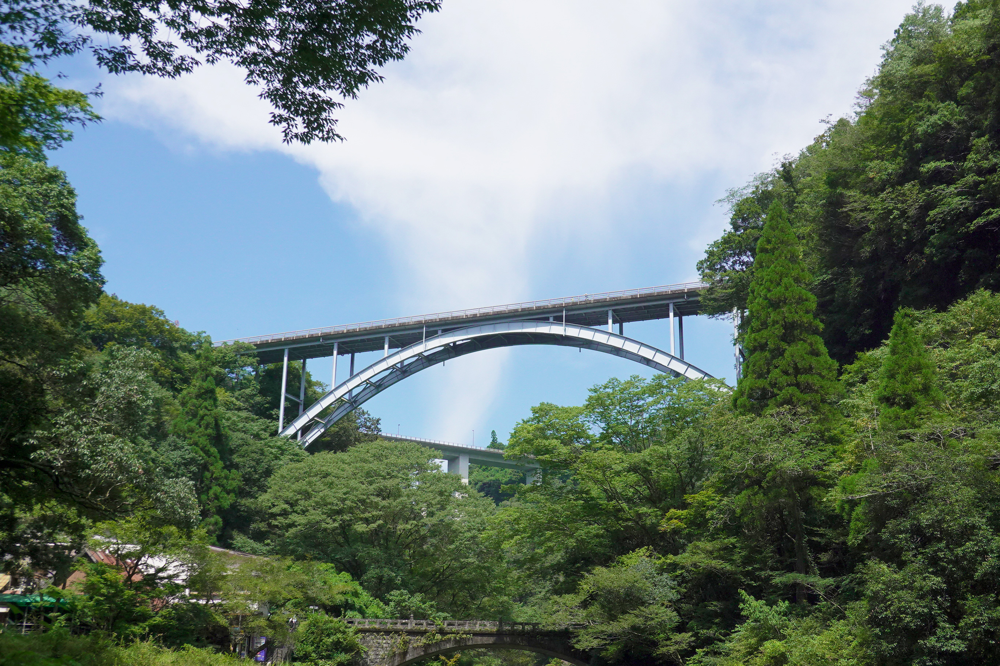

高千穂峡
火砕流が侵食されて断崖となった峡谷で、国の名勝・天然記念物に指定された高千穂峡。周辺には日本神話ゆかりの神々を祀る神社が数多く存在しています。


高千穂峡から眺めることのできる三段橋は、全国的にも珍しい峡谷に三本もの橋が架かっている風景となっています。
イザナギノミコトとイザナミノミコトが生み出したとされる「おのころ池」には、コイやチョウザメが泳いでおり、癒しのひとときを味わうことができます。
基本情報
| 住所 | 〒889-2162 宮崎県宮崎市青島２丁目１３番１号 |
|---|---|
| 電話番号 | 0985-65-1262 |
| 営業時間 | 参拝時間6:00から日没まで 季節により夕方は変わります 正月以外の御守りと御朱印の授与は8時から17時 |
| 休業日 | なし |
| 料金 | 日向神話館のみ 入館料ありHP要確認 |
| アクセス | JR日南線青島駅下車徒歩約10分 青島駅から青島神社(島内)までは約800m |
| 駐車場 | なし |
| Webサイト | 青島神社 |